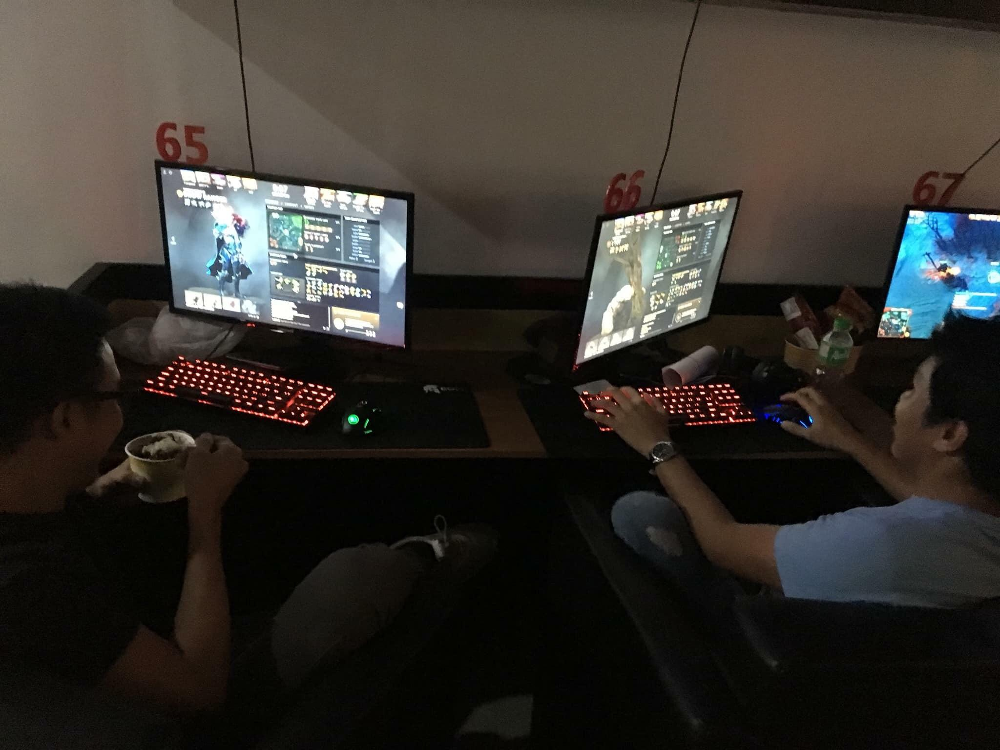
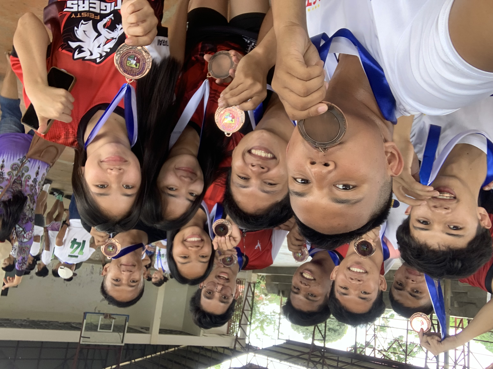
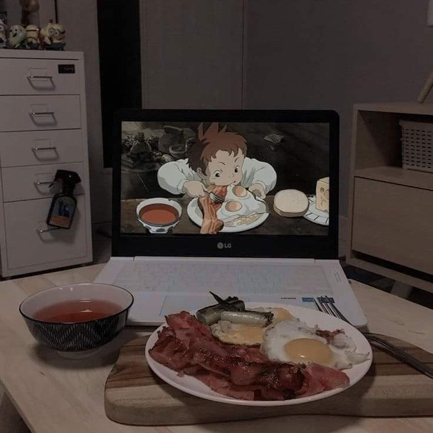

HOBBIES AND SKILLS
PLAYING DOTA 2
First and foremost, Dota is a game that constantly challenges me. Every match is unique, requiring me to think on my feet, make quick decisions, and adapt to the ever-changing situations. This aspect of Dota keeps me engaged and excited, as I'm always learning and improving my skills.
The teamwork and coordination in Dota are also major factors that bring me joy. Collaborating with my teammates, strategizing together, and executing well-coordinated plays is incredibly satisfying. The feeling of synergy and accomplishment when we work together to achieve victory is hard to match.
Additionally, Dota has a vibrant and passionate community. Interacting with other players, discussing strategies, and sharing experiences create a sense of camaraderie and connection. I've made many friends through Dota, and the shared love for the game brings us closer together.
Furthermore, Dota serves as a form of escapism for me. It allows me to enter a different world, where I can temporarily forget about my daily worries and immerse myself in the game. It's a way for me to relax, unwind, and have fun, all while engaging in a hobby that I truly enjoy.
PLAYING SEPAKTAKRAW
A Sport that challenges me and pushing me beyond my limits. It's a beautiful dance of agility and precision, a symphony of movement demanding unwavering focus. Teamwork is paramount. The passion burns fiercely, fueled by the love of the game and the pursuit of excellence. Above all, it's pure joy: the thrill of competition, the sweetness of victory, and the memories shared with brothers in arms.
Watching Anime
Watching anime is much more than just a hobby for me. It's a way to escape from reality, learn about different cultures, make new friends, and express myself creatively. It's a part of my life that I wouldn't trade for anything.
How I see myself eight years from now?
In The near future, I would like to attain a college degree in Bachelor of Science in Information Technology.
Then, I would apply a good job for training and experience in line with my course,
then after having a
a valuable time in my experience, I will apply again for a higher position and raise my salary.
This is what i want to become.